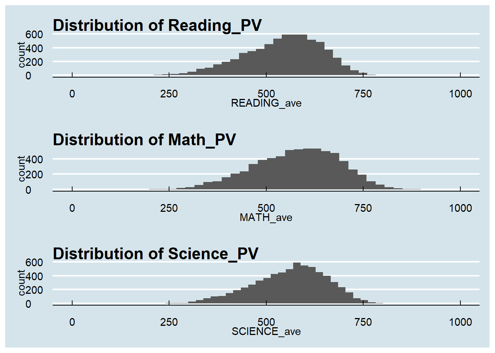
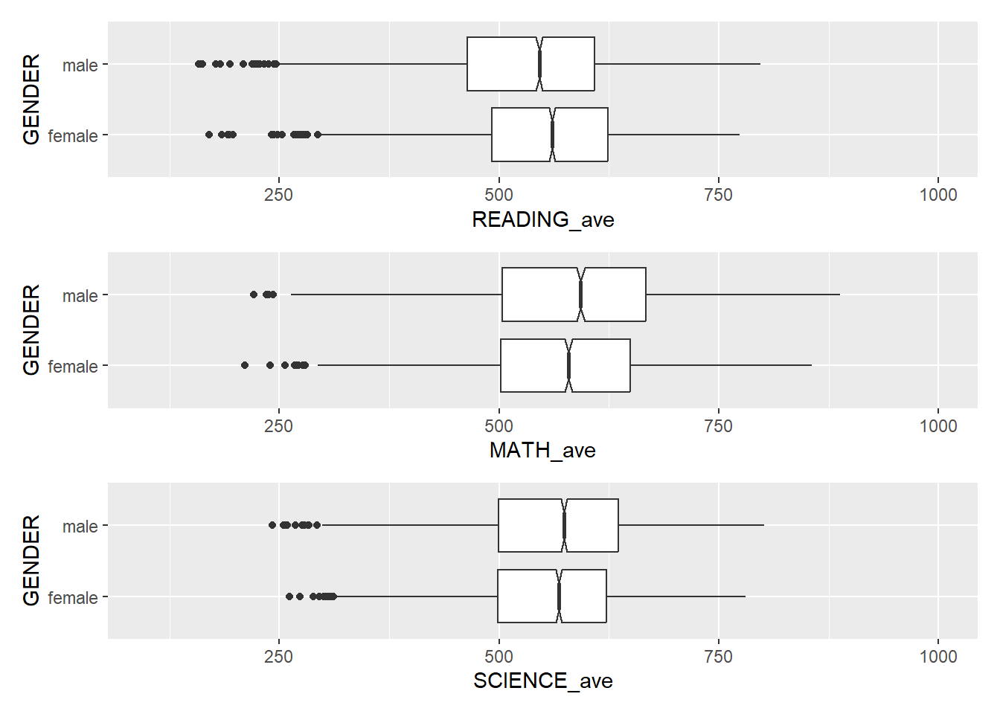
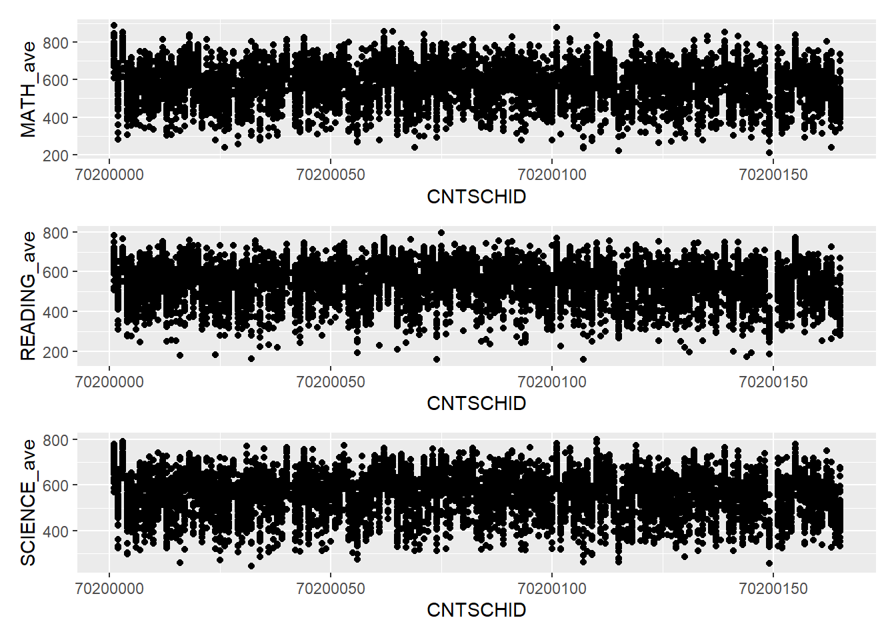

pacman::p_load(tidyverse,haven)
stu_qqq <- read_sas("data/cy08msp_stu_qqq.sas7bdat")
stu_qqq_SG <- stu_qqq %>%
filter(CNT == "SGP")
write_rds(stu_qqq_SG,
"data/stu_qqq_SG.rds")
stu_qqq_SG <-
read_rds("data/stu_qqq_SG.rds")Take-home
1.0 Preparation the Analytical Visualization.
1.1: Import and read file.
1.2: Install R-package
pacman::p_load(ggrepel,
patchwork,
ggthemes,
hrbrthemes,
tidyverse)1.3 Data cleaning
library(dplyr)stu_qqq_SG <- stu_qqq_SG %>%
rowwise() %>%
mutate(READING_ave = mean(c_across(PV1READ:PV10READ), na.rm = TRUE))stu_qqq_SG <- stu_qqq_SG %>%
rowwise() %>%
mutate(SCIENCE_ave = mean(c_across(PV1SCIE:PV10SCIE), na.rm = TRUE))stu_qqq_SG <- stu_qqq_SG %>%
rowwise() %>%
mutate(MATH_ave = mean(c_across(PV1MCUD:PV10MCUD), na.rm = TRUE))2.0 Visualization.
2.1 The distribution of Singapore students’ performance in mathematics, reading, and science.
Summary: From the distribution plot provided, reading, math, and science all show a standard normal distribution pattern, indicating that in each subject, the PV of students is concentrated around a central value (around 500 points), and does not show significant bias or outliers. This distribution pattern means that there are a small number of very high or very low achieving students in each subject, while most students’ achievement is clustered around the average.
pacman::p_load(ggrepel, patchwork,
ggthemes, hrbrthemes,
tidyverse) `stat_bin()` using `bins = 30`. Pick better value with `binwidth`.
`stat_bin()` using `bins = 30`. Pick better value with `binwidth`.
`stat_bin()` using `bins = 30`. Pick better value with `binwidth`.
2.2 The relationship between the performances of Math,Reading and Science with different Gender.
Summary: As can be seen from the boxplot, there is little difference between the average scores of male and female students in science, and the average and median scores of male and female students are similar. In reading, women’s average and median scores were slightly higher than men’s. In contrast, when it comes to math scores, men have slightly higher average and median scores than women.

2.3 The relationship between the performances of Math,Reading and Science with different School.
Summary: This dot plot shows that the majority of the schools remain average, but it is true that some schools have higher quality teaching and their students have better results and PV.
